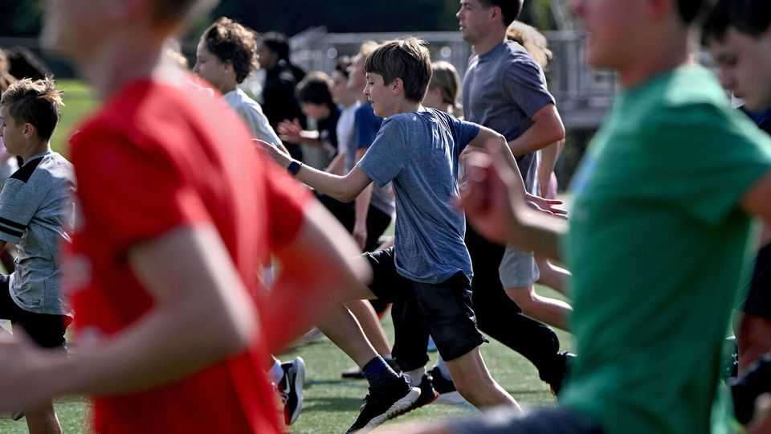
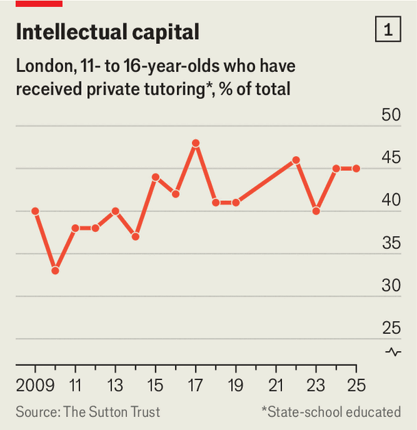
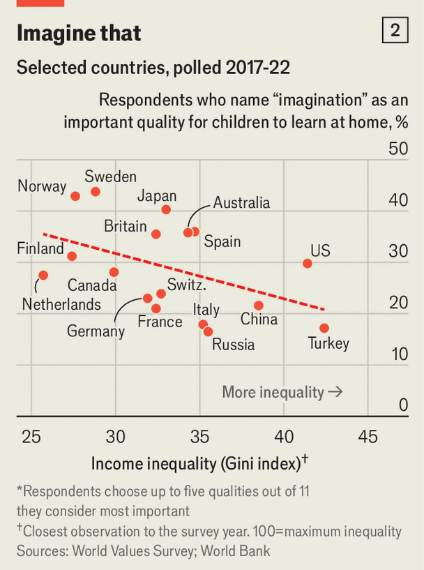

Intensive parenting is no longer the preserve of the rich
But wealthy families still come out on top

Nov 5th 2026
RICH PARENTS are different. They have money. They also used to be different in spending pots of it on their offspring’s edification. Yet as competition for university places and well-paying jobs heats up, parents across income levels are bankrolling their children’s futures earlier and more aggressively. From piano lessons for toddlers to tennis for teenagers, intensive parenting is on the rise.
The sums are significant. More than half of American children take part in a sport after school or at weekends. In 2024 this cost the average family $1,016, just for one child’s main sport. That was a 46% jump from 2019, twice the cumulative rate of inflation. Between the logistics of chauffeuring children to several practices each week and conferring with coaches, American parents are dedicating more than 15 hours a week to their children’s sports—a commitment on a par with a part-time job.
As with young bodies, so with young minds. Private tutoring has long been an obsession in richer parts of Asia. Three in four school-age South Koreans took paid lessons in 2025, according to national surveys, including 57% in the lowest income quintile. So did four in five five-year-olds. The OECD, a club of mostly rich countries, estimates that average tutoring spending per pupil has reached roughly a tenth of average household disposable income.

Now other Asian parents are splashing out. Around 27% of pupils in India, and 31% of those in urban areas, receive private tuition. In China spending on education has grown fastest in the poorest regions.
The trend is not confined to Asia. One in three French pupils aged 15-18 is enrolled in private coaching. The share of state-educated British ones with access to tutoring is now nearly level for the poorest and richest households; 37% of those from the lowest quartile have them, just shy of the 39% among the richest quartile, according to the Sutton Trust, an education charity. In London the figure for state-school pupils rises to 45% (see chart 1). The gap has narrowed in part thanks to an expansion of state-funded tutoring schemes. Yet parents are paying, too: 30% of British youngsters aged 11-16 in state schools say they have had private tutoring, up from 18% in 2005, Sutton Trust’s data show.
Matthias Doepke of the London School of Economics and Fabrizio Zilibotti of Yale University find that, historically, the more unequal the country, the less attention parents pay to soft virtues like independence or imagination (see chart 2). Western populations believe inequality to be increasing, and a middle-class lifestyle is perceived to be less of a given, meaning parents have grown less relaxed. Their focus is shifting to qualities like hard work, which intensive parenting tries to instil.

High-pressure education comes at a growing cost, too. In 1990 private spending in America on schools and universities, plus tutoring, coaching and the like, worked out at 18% of total lifetime educational investment (including public spending), according to the National Transfer Accounts, an international research project. By 2020 (the latest figure available) the share was 24%, equivalent to $68,000. In 2023 private spending accounted for 42% of lifetime educational investment per child in South Korea, an eye-watering $152,000 (also in 2020 dollars).
Yet these investments do not necessarily translate into social mobility. That may be because although the poor are spending more, the rich are not letting up. The likelihood that children do better than their parents has stagnated over the past decade in France and Spain, and collapsed in Singapore and South Korea. Getting into a top university is harder than ever. Harvard admits 3% of applicants, down from 30% in 1960. The share of rural students admitted to Peking University dropped from a third between 1978 and 1998 to around a sixth in 2021—faster than the relative decline in China’s rural population.
Even with a degree in hand, 30% of Americans from non-graduate family backgrounds reach the top fifth of earners, compared with 41% of those whose parents attended university, according to the Sutton Trust. Although the share of adults from non-graduate families earning a university degree has climbed by ten percentage points over the past decade, the college earnings premium such people could expect fell by 11 percentage points. In Britain graduates who grew up in poverty, defined by eligibility for free school meals, earned 7% less than their peers a decade after graduating from the same university and course, according to the Resolution Foundation, a think-tank. In a competition for their children’s future, rich parents still have the edge. ■